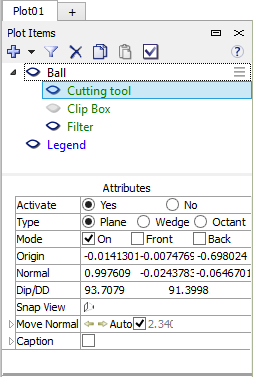

绘图项切割工具
切割工具用于将切割对象（平面、楔形体或八分体）施加到其父绘图项上。

显示切割工具（使平面/楔形体/八分体在绘图中可见）：在“绘图项列表”中选中它即可。当在“绘图项列表”中选中其他对象时，它会从视图中移除。
激活切割工具（在绘图中开启其切割作用），或通过切换其 按钮来取消激活。
注意：显示与激活彼此独立。
切割工具可以复制/粘贴（copied/pasted）到另一个绘图项上。此操作可以跨绘图执行。
在“绘图项”列表中选中切割工具时，控制集下部的属性部分（见相邻图片）将显示其属性。这些属性可在控制集的属性部分调整，也可通过在绘图内操作切割工具进行交互式调整。
切割工具属性
激活：这相当于使用其开/关切换按钮（ ）。选择“是”将使该工具裁剪绘图项；选择“否”则绘图项不受影响。无论哪种情况，只要切割工具在控制集上部保持选中，它就是可见的。这意味着当选择“否”时，可以操作切割工具，但不会显示其切割效果。
类型：指定切割工具应采用三种形状（“平面”“楔形体”或“八分体”）中的哪一种。注意，选择“平面”时将有一组定位属性（“原点”“法向”和“倾角/倾向”）；若选择“楔形体”或“八分体”（分别）则有两组或三组（每个平面一组）。
同步到：为当前类型的切割工具指定一个名称。若绘图项的切割工具具有相同的名称和类型，则它们会同步：对某个切割工具所做的更改将反映到所有已同步的工具上。将该字段留空可禁止父绘图项的切割工具同步。当绘图项添加到绘图时，每种类型的切割工具初始都命名为“Default”。
模式：指定工具的切割方式。若选择“面上”（On），则仅渲染绘图项与平面重合的切片。若选择“后面”（Back），则在平面位置切割绘图项，绘图项位于平面“后方”的部分将完整渲染。若选择“前面”（Front），则在平面位置切割绘图项，绘图项位于平面前方的部分将完整渲染。这些开关可以组合使用。
原点：设置平面的原点。
法向：设置与原点共同构成平面法向的坐标位置。
倾角/倾向：分别设置平面的倾角和倾向。此设置可作为“原点”和“法向”设置的替代方式，用于定位切割工具。两者中任一处的更改都是双向的。
对齐视图：按下该按钮，可将视图“对齐”到与平面垂直的方位（正对平面），使屏幕表示平面表面。再次按下该按钮将执行相同操作，但方向相反。
沿法向移动：使切割工具能够在其法向的垂直方向上按增量移动，可向一个方向（左箭头）或另一个方向（右箭头）移动。若取消勾选“自动”（Auto）框，则可手动指定移动的增量。
在绘图中操作切割工具
切割工具由一（“平面”）、二（“楔形体”）或三（“八分体”）个平面组成，可在屏幕上交互式定位和定向。
自由定位：将鼠标移向原点，原点在切割工具上显示为正方形（  ）。当鼠标足够接近、可定位切割工具时，光标将变为张开的手形（ ）。单击并拖动即可移动切割工具。
）。当鼠标足够接近、可定位切割工具时，光标将变为张开的手形（ ）。单击并拖动即可移动切割工具。
沿法向定位：其工作方式与自由定位相同，但需按住 Ctrl 键，将原点的定位约束到沿平面法向的位置上。此操作也可使用 Page Up 和 Page Down 键完成。
3D 旋转：当鼠标光标与原点距离不够近、无法定位原点时，光标将显示为手指指针（ ）。单击并拖动所关注的平面，即可三维旋转到所需方位。
2D 旋转：其工作方式与3D 旋转相同，但需按住 Ctrl 键，使切割工具绕屏幕法向旋转。
更改楔形体角度：将鼠标置于楔形体某个面的红色法向指示器上。当手形光标出现时，单击并拖动即可更改楔形体的角度。（仅当类型属性设置为“楔形体”时可用。）
CS：裁剪框的图示需要更新，以包含同步字段
| 这些内容对您有帮助吗？… | FLAC3D © 2019, Itasca | 原文更新于 2020 年 10 月 8 日 |